Kort fortalt
Nytt 18.11.2026: Det originale displaykortet (NEO-DISPLAY V2) er kartlagt, og det er laget en oppdatert plan i tre trinn: reparer displayet, skaff et BH-display, eller bytt til et komplett KT-sett.
Oppdatert plan: slik får du sykkelen til å virke
Denne planen bygger på det som er kjent fra BH sine dokumenter, på eierens egne bilder og målinger, og på det som er funnet om det originale Neo-displayet. Den går i rekkefølge etter kostnad og innsats: først det som er billigst og kan reverseres, til slutt full ombygging. Gå til neste trinn først når forrige trinn er avklart.
Tolkning, ikke bekreftet Displayet snakker digitalt (seriell UART) med kontrolleren over RX og TX, får strøm på POWER og GND, bruker KEY som vekke-/startsignal og BRK for bremsesignal. Se Det originale Neo-displayet.
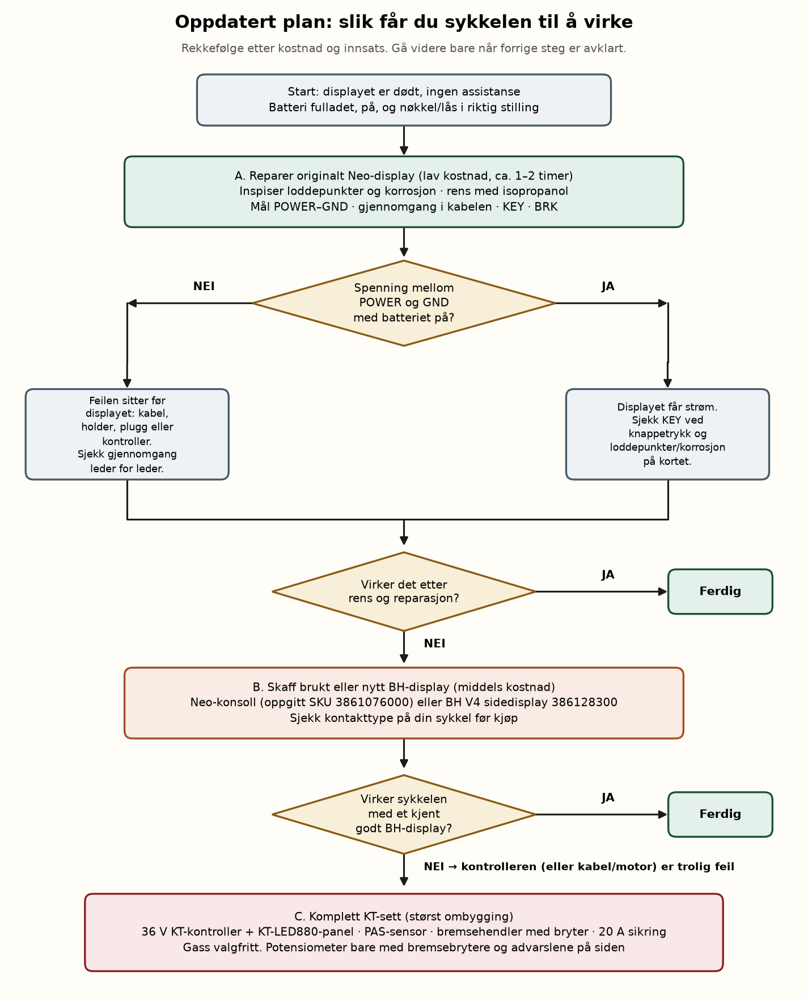
A. Reparer det originale Neo-displayet
Lav kostnad. Det du trenger er et multimeter, isopropanol (isopropylalkohol, 90–99 %), en myk tannbørste eller bomullspinner, og god belysning, gjerne med lupe eller mobilkamera med zoom. Lodding er bare nødvendig hvis en ledning har løsnet. Hvis du aldri har loddet, er det en grei jobb å be noen med erfaring om.
| Sjekk | Hva du trenger | Hva du måler eller ser etter | Hva resultatet betyr |
|---|---|---|---|
| 1. Se over kortet | Lys, lupe eller mobilkamera | Grønt eller hvitt belegg, sprukne loddepunkter, ledere som er løse eller har løsnet fra de seks loddepunktene, brente komponenter | Belegg: rens (neste rad). Løs leder: må loddes fast. Brent komponent: kortet er trolig ødelagt, gå til B |
| 2. Rens | Isopropanol 90–99 %, myk børste, bomullspinner. Batteriet ute | Børst forsiktig rundt loddepunktene og kontaktene. La tørke helt, minst 30 minutter, før du setter på strøm | Korrosjon kan gi brudd eller lekkstrøm mellom punkter. Rens alene kan løse en feil, men ikke regn med det |
| 3. POWER–GND | Multimeter på DC volt, område over 42 V. Batteriet på, displayet koblet til kabelen | Rød pinne på POWER, svart på GND. Mål først uten å trykke, så mens du holder på-knappen inne (SET i 3 sekunder ifølge BH-manualen 2012) | Uverifisert Hvis POWER er batteri+, ventes omtrent 36–42 V (pakkespenning). En lavere fast spenning, f.eks. rundt 5 eller 12 V, kan bety at kontrolleren gir regulert strøm; det er ikke nødvendigvis en feil. 0 V: strømmen kommer ikke fram til displayet. Sjekk kabel og holder (rad 4), deretter kontrolleren |
| 4. Gjennomgang i kabelen | Multimeter på gjennomgang (pipelyd). Batteriet ute | Fra hvert av de seks loddepunktene til pinnene i pluggen i den andre enden av kabelen, mot kontrolleren. Mål også mellom alle par av ledere | Hver leder piper til nøyaktig én pinne: kabelen er hel. Ingen pip: brudd. Pip mellom to ulike ledere: kortslutning. BH sin feilsøking nevner en 5-pinners kontakt mellom display og kontroller BH 2015, så en av de seks lederne kan være ubrukt eller gå et annet sted. Noter hva du finner |
| 5. KEY | Multimeter på DC volt. Batteriet på | Rød pinne på KEY, svart på GND. Trykk og hold på-knappen | Tolkning Spenningen bør endre seg tydelig når du trykker, f.eks. gå høy. Ingen endring: knappen, kortet eller ledningen kan være feil. Hvordan KEY oppfører seg på dette kortet, er ikke dokumentert offentlig |
| 6. BRK | Multimeter på DC volt. Batteriet på | Rød pinne på BRK, svart på GND. Klem hver bremsehendel for seg | Spenningen bør skifte når du bremser og gå tilbake når du slipper. Hvis den står fast i «brems»-stilling, kan kontrolleren holde assistansen av. Hvilket nivå som betyr «brems», er ikke bekreftet |
B. Skaff et brukt eller nytt BH-display
Middels kostnad, lite arbeid. Dette er det BH selv gjør først ved kommunikasjonsfeil: bytte display og se om det nye virker BH diagnosis 2015. Et kjent godt BH-display skiller samtidig mellom feil i displayet og feil i kontrolleren.
| Sjekk | Hva du trenger | Hva du sjekker | Hva resultatet betyr |
|---|---|---|---|
| Finn riktig del | Bilder av ditt display, holderen og pluggen | Rund eller firkantet kontakt. Biciclick skriver at det originale BH-displayet for Neo/EVO/Nitro/EasyGo har rund kontakt, og at noen Atom-modeller har firkantet hvit kontakt biciclick.es | Kjøp bare et display med samme kontakttype som din sykkel |
| Delenumre | Delenummeret når du spør forhandler | Neo-konsoll: SKU 3861076000, oppgitt i en forhandlerlenke fra 2016 gammel kilde. BH V4 sidedisplay 386128300: forhandleren Service Course oppgir at det passer EVO (også Cross) og NEO forhandlerens påstand | Be en BH-forhandler bekrefte delenummeret mot rammenummeret ditt før du kjøper. Delen kan være utgått |
| Test | Lånt eller kjøpt BH-display, fulladet batteri | Sett det i holderen og slå på med SET i 3 sekunder | Virker: feilen var i det gamle displayet. Virker ikke: feilen sitter trolig i holder, kabel eller kontroller. BH sin rekkefølge er display, så holder, så kontroller, så kabler BH 2015 |
C. Komplett KT-sett, hvis BH-kontrolleren er feil eller BH-display ikke finnes
Størst kostnad og arbeid. Her byttes hele styringen. Motoren og batteriet beholdes. Det eieren allerede har av LED-panel (se LED-panelet) passer bare hvis det faktisk er et KT-panel. Det tryggeste er å kjøpe kontroller og panel som et sett fra samme selger.
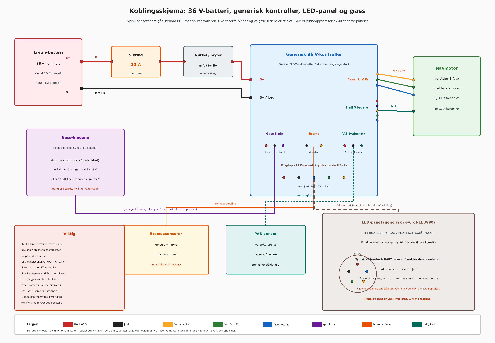
| Del eller steg | Hva du trenger | Hva du måler | Hva resultatet betyr |
|---|---|---|---|
| Delene | 36 V KT-kontroller (15–17 A, sinus, hall) med matchende KT-LED880-panel, PAS-sensor (tråkkfrekvens), bremsehendler med bryter, 20 A sikring, 2,5 mm² ledning til batteri og faser. Gass er valgfritt | Sjekk at kontrolleren er oppgitt for 36 V og at panelet selges som kompatibelt med akkurat den kontrolleren | KT-panel virker bare med KT-kontroller Kunteng, Emotoer |
| 1. Dokumenter | Mobilkamera, tape og penn | Ta bilder av alle kontakter. Merk hver ledning før du kobler fra | Gjør at du kan gå tilbake til originalen |
| 2. Faser | Multimeter på motstand (Ω). Batteriet ute | Mål mellom de tre tykke motorlederne, alle tre par | Like lave verdier på alle par: viklingene er hele. Ett par mye høyere eller brudd: motorfeil |
| 3. Hall-ledere | Multimeter på DC volt, 5 V tilført fra den nye kontrolleren | Hvert av de tre signalene mot jord mens du dreier hjulet sakte | Veksler mellom ca. 0 og 5 V: sensoren virker. Står fast: sensor eller ledning er feil |
| 4. Koble | Adapterkabel, ikke kapp originalen. Sikring rett etter batteri+ | Følg skjemaet som følger kontrolleren. Ikke stol på farger alene; mål panelpluggen (rød/svart er typisk B+/jord, blå/grønn/gul er usikre) | Feil pinne kan ødelegge panel eller kontroller |
| 5. Første test | Hjulet fritt i stativ, laveste hjelpenivå | Bruk selvlæring hvis kontrolleren har det. Ellers prøv fase/hall-kombinasjoner | Går jevnt og stille med lite strøm: riktig. Rykker, brummer eller går baklengs: feil kombinasjon |
| 6. Bremser og grenser | Bremsehendler koblet til | Klem bremsen mens hjulet går. Sett fartsgrense 25 km/t og riktig hjulstørrelse | Motoren skal stoppe med en gang du bremser. Gjør den ikke det, skal sykkelen ikke brukes |
Du mister BH-kontrollerens vern (overstrøm, overoppheting, TMM-tolking og BH-feilkoder) og momentsensoren. Batteriets egen BMS virker fortsatt, men den beskytter ikke mot en motor som drar ukontrollert. Mer om deler og rekkefølge står i Koblingsskjema for ny kontroller.
Instruksjonsvideo kommer: En instruksjonsvideo som går gjennom koblingsskjemaet trinn for trinn, er under arbeid. Den legges ut her når den er ferdig.
Hvilken sykkel og hvilket system
Det offisielle navnet som brukes her er BH Emotion Evo Cross. Produsenten er BH Bikes (Beistegui Hermanos) i Spania. I BH sine egne dokumenter heter elsykkellinjen BH EMOTION, og modellen heter Evo Cross (produktkode ev705 på BH sin nettside). Sykkelen ble også solgt som Easy Motion Evo Cross, særlig i USA. «BHI Motion» er ikke et merkenavn som er funnet i kildene; det er mest sannsynlig en misforståelse av «BH Easy Motion» eller «BH Emotion». Navnet «Easy Motion 2» er ikke brukt, fordi det ikke er funnet som offisiell modellbetegnelse.
- Offisielt navn
- BH Emotion Evo Cross (BH-manual 2012, BH ev705-side). Også solgt som Easy Motion Evo Cross.
- Produsent
- BH Bikes (Spania)
- Spenning
- 36 V (BH-manual 2. aug. 2012; Electric Bike Review 2015; BH ev705: 36 V / 12 Ah, 432 Wh)
- Batteri
- Li-ion, 36 V. Senere Evo Cross: 12 Ah / 432 Wh ifølge BH. En Evo 27.5 fra 2015 er oppgitt med 11,6 Ah / 418 Wh.
- Motor
- Børsteløs baknavmotor, system Evo RDS. 350 W merket, begrenset til 250 W i EU. Foruminnlegg nevner merking «M155 CN3614 (36V)»; sjekk merket på din motor.
- Sensor for tråkk
- Momentsensor TMM4 ved høyre bakgaffel, rett innenfor minste drev. Ikke vanlig magnet-PAS. Kilde: BH 2012 og 2015
- Hastighetssignal
- Kommer fra motoren selv (ikke eikemagnet), ifølge BH-feilsøking.
- Kontroller
- Inne i skrårøret over batteriet, BH-spesifikke kontakter
- Display
- BH LCD, avtakbart, med fjærkontakter i holderen. Seriell kommunikasjon med BH-egne meldinger. Start og stopp: SET-knappen i 3 sekunder (BH-manual 2012).
- Gir
- Ifølge BH ev705-spesifikasjonen: Shimano Acera girhendlere, Shimano Alivio 8-gir bakgir, Shimano Altus 3-delt frontdreir, kassett Shimano HG41 8-gir (11–32T). Eksakt modellnummer på giret er ikke oppgitt der. Sjekk merkingen på din sykkel; det kan variere mellom årsmodeller.
- Usikkert
- Nøyaktig modellår, kontrollerversjon (V1/V2) og pinnefordeling i motorpluggen og displayholderen

Sikkerhet før du starter
- Ta ut batteriet før du kobler fra eller til noe, og før all kabelarbeid.
- Kortslutt aldri batteripolene. Et Li-ion-batteri kan levere svært høy strøm og ta fyr.
- Åpne ikke batteriet og ikke rør BMS-en (batteristyringen). Det er fare for brann.
- Er batteriet hovent, varmt, lukter brent eller har vært i vann: slutt å bruke det og lever det til forhandler.
- Lad på et ikke-brennbart underlag, med tilsyn, og bare med original lader.
- Denne veiledningen beskriver ikke hvordan man omgår tyverisikring eller batterilås. Har du mistet nøkkelen, gå til forhandler med kvittering.
Koblingsskjema for Evo Cross
Dette er kjernen i siden: hvordan originalsystemet henger sammen. Kontrolleren sitter i skrårøret og er knutepunktet. Den får strøm fra batteriet, snakker med displayet, leser momentsensor og bremsebrytere, og driver navmotoren med tre faseledere og hall-sensorer.
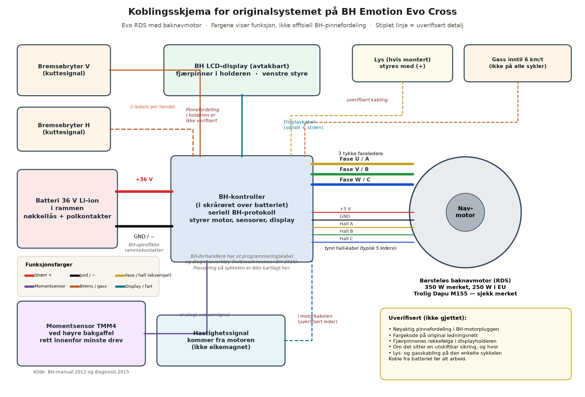
| Del | Hva den gjør | Hva som er kjent |
|---|---|---|
| Batteri 36 V | Gir likespenning til kontrolleren via pol- og signalkontakter i rammen, med nøkkellås | Kjent 36 V-system |
| Kontroller | Styrer motoren og kommuniserer med display og sensorer | Kjent plassering i skrårøret. Pinnefordeling ikke publisert |
| Display | På, av og assistansenivå. SET i 3 sekunder starter eller stopper systemet | BH-manual 2012. Fjærpinnenes rekkefølge er uverifisert |
| Momentsensor TMM4 | Leser kjedetrekk / kraft på pedalen og gir et analogt spenningssignal | BH 2012 og 2015 |
| Hastighet | Fra motoren, ikke fra en magnet på eika | BH-feilsøking. Hvilken leder i pluggen er uverifisert |
| Bremsebrytere | Kutter assistansen når du bremser | Vanlig på dette systemet; nøyaktig kontakt-type kan variere |
| Navmotor | Tre tykke faseledere og typisk fem tynne hall-ledere | Vanlig børsteløs oppbygning. BH-pluggens pinneplan er uverifisert |
| Lys og gass | (+)-knappen styrer lys og bakgrunnslys. Gass inntil 6 km/t finnes på noen versjoner | 2012-manualen. Kablingen på den enkelte Evo Cross er ikke kartlagt her |
BH-forhandlere har et eget diagnose- og programmeringsverktøy. I BH-dokumentet fra 2015 nevnes en hvit og svart programmeringskabel til kontrolleren. Hvor den sitter på sykkelen, er ikke kartlagt her.
Programvare og fastvare
Kjent fra BH 2015: Forhandlere kan endre noen kontrollerinnstillinger med «Personal Settings Software»: effektnivå per assistansegrad, startrespons og startakselerasjon. Det krever BH sitt eget utstyr og kabel. Det er ikke funnet noen offentlig metode for å lese ut eller laste inn selve fastvaren. Et åpent verktøy (pye-motion, 2017) kan lese de serielle meldingene mellom display og kontroller og sjekke sjekksum; det skriver ikke ny fastvare.
Den realistiske veien hvis originalstyringen er død, er derfor enten originale BH-deler, eller et komplett ettermarked-sett der kontroller og display hører sammen. Se koblingsskjema for ny kontroller.
Når assistansen ikke virker
Gå gjennom rekkefølgen under. Start med det enkle. Test etter hvert steg.
Feilsøkingsflyt: Slår displayet seg på? Hvis nei, sjekk batteri, nøkkel og kontakter (steg 1–4). Deretter: viser det feilkode? Hvis ja, slå opp koden i tabellen under. Hvis nei, eller etter at koden er slått opp: sjekk bremser, sensor og kabler (steg 5–9). Fortsatt feil: BH-verksted.
-
Lad batteriet helt
Bruk original lader. La det stå minst 30 minutter selv om det ikke ser ut som noe skjer. Et batteri i dvale (BMS-beskyttelse) våkner ofte når laderen kobles til. Sjekk LED-indikatoren på batteriet.
-
Nøkkel og låsing
Batteriet skal klikke helt på plass, og nøkkelen skal stå i kjørestilling. Et batteri som sitter litt løst gir ingen strøm eller strømbrudd på humpete vei.
-
Rens kontaktene på rammen
Ta ut batteriet. Rens de to store polene og de små kontaktene på holderen i rammen med elektronikk-kontaktspray som er trygg for plast. Sjekk at fjærkontaktene spretter helt ut. Batterisiden: tørk forsiktig og se etter brannmerker.
-
Sjekk displayet og holderen
Ta av displayet. Trykk lett på hver fjærpinne (f.eks. med viskelær). Pinner som ikke spretter tilbake gir feil 13. Rens med en lett fuktet klut med isopropanol. Ikke stram holderen for hardt. Se også Displayet er dødt.
-
Start uten fot på pedalen
Momentsensoren kalibreres ved oppstart. BH-manualen 2012 sier: vent 2 sekunder etter påslag før du tråkker. Trykk på pedalen under oppstart gir feil 14. Slå av, ta foten bort, slå på igjen.
-
Bremsebrytere
Hvis motoren aldri gir hjelp, eller et varseltrekant eller bremsesymbol vises hele tiden, kan en bremsebryter henge. Slå av, koble fra én bremsekontakt om gangen ved styret, og test igjen. Smør hendelen, bytt bryter om den henger.
-
Kontaktene ved styret og motoren
Ved styret: to små kontakter for bremser, én større skrukontakt for display (og gass). Ved bakre kjedestag: motorkontakten. Koble fra, rens, la tørke, koble til med pilene på linje.
-
Momentsensoren (TMM4) ved bakhjulet
Sitter rett innenfor minste drev. Tørk platen mellom sensor og kjede. Kjedevoks og fett her kan stoppe assistansen. De to små skruene skal bare være lett tiltrukket (ca. 1 Nm). På nyere Evo må sensoren ut for å nå skruene.
-
Fartsvisning
Viser displayet 0 km/t mens du sykler, går displayet i dvale og assistansen faller ut. Fartssignalet kommer fra motoren. BH sin feilsøkingsguide sier da: sjekk motorkabel, ellers bytt motor.


Displayet er dødt
Med «dødt display» menes at skjermen ikke viser noe når du prøver å slå på systemet: helt svart, uten bakgrunnslys, og uten feilkode. Gå stegvis. Det som er hentet fra BH er merket, resten er vanlig feilsøking.
-
Bekreft at batteriet er våkent og har spenning
Lås batteriet helt inn, sett nøkkelen i kjørestilling, og mål likespenning på de to store polene (se målinger). Et fulladet 36 V-batteri ligger typisk rundt 41–42 V. 0 V tyder på dvale eller at nøkkelen er av. Sett på original lader i minst 30 minutter og mål igjen. Generelt for 36 V Li-ion, pluss BH-praksis for dvale
-
Slå på med SET-knappen
Ifølge BH-manualen fra 2012 aktiveres og deaktiveres systemet ved å holde SET-knappen inne i 3 sekunder. Vent 2 sekunder etter påslag før du tråkker. Et helt svart display etter dette er noe annet enn et display som lyser og viser feilkode. BH-manual 2012
-
Skille bakgrunnslys fra manglende strøm
Samme manual sier at (+)-knappen slår på sykkelens lys og bakgrunnslyset i displayet. Hvis du hører et klikk, eller lysene på sykkelen tennes, mens skjermen fortsatt er svart, kan displayet ha strøm men defekt panel. Hvis verken lys, bakgrunnslys eller tall vises, er det mer sannsynlig at displayet ikke får strøm eller ikke får startsignal. Knappen er dokumentert tolkningen av utfallet er generell
-
Ta av displayet og sjekk fjærpinnene
Displayet er avtakbart: trykk inn klaffen under og skyv det opp av holderen (BH-manual 2012). Trykk lett på hver fjærpinne og sjekk at den spretter tilbake. Rens pinnene og holderen. Korrosjon eller en pinne som sitter fast gir ofte kommunikasjonsfeil (kode 13) når displayet ellers virker, men kan også gi helt svart skjerm. Avtaking: BH 2012 Kode 13: sjekk kabler og kontakter, BH 2015
-
Kabelen fra holder til kontroller
Følg kabelen fra displayholderen inn mot rammen og kontrolleren. Se etter knekk, oksid og kontakter som ikke er klikket helt i. BH sin flyt for kommunikasjonsfeil (kode 13) går gjennom display, displayholder, kontroller og tilkoblingssett. BH diagnosis 2015
-
Kontroller og eventuell sikring
I BH-dokumentet fra 2015, under «Other errors: Controller», er tiltaket ved «Display does not switch on. Screen flash» å bytte kontrolleren, og hvis det ikke hjelper, å omprogrammere kontrollerinnstillingene med forhandlerverktøyet. Om det sitter en utskiftbar sikring på denne kontrolleren, er ikke beskrevet der. Ikke åpne kontrolleren på måfå. BH 2015
-
Test med et kjent godt BH-display
BH sin egen feilsøking for kommunikasjonsfeil starter med å bytte display og se om det nye virker. Displayet må være et BH-display til samme system, ikke et tilfeldig merke. Se hvorfor fremmede display ikke passer. BH 2015
Feilkoder på displayet
| Kode | Betyr | Hva du gjør |
|---|---|---|
| 01 / 02 / 10 | Overstrøm | Sjekk motorkontakten. Vedvarer det: kontrolleren |
| 03 | Momentsensor (TMM) | Rens platen, sjekk skruer og kontakt. Sensorsignal skal ligge 0,1–3,5 V |
| 04 | Motorfeil | Sjekk motorkontakt og kontroller |
| 05 | Motorsensor (hall) | Rens motorkontakten. Vedvarer det: motor eller kontroller |
| 08 | Lavt batteri | Lad. Sjekk at batteri og kontakter sitter fast |
| 09 | Motor blokkert | Sjekk motorkabelen der den går ut av akselen |
| 11 / 12 | Overoppheting | Se Motorkontrolleren er varm |
| 13 | Kommunikasjon | Display, displayholder, kabel. Rens fjærpinnene |
| 14 | Pedalfeil | Start på nytt uten fot på pedalen |
| 15 | Sensorfeil | Juster momentsensoren (verksted) |
Kilde: BH Emotion brukermanual (PDF datert 2. aug. 2012) og BH «Ebike diagnosis flows» (28. mai 2015). Kodene kan variere litt mellom modellår.
Målinger med multimeter
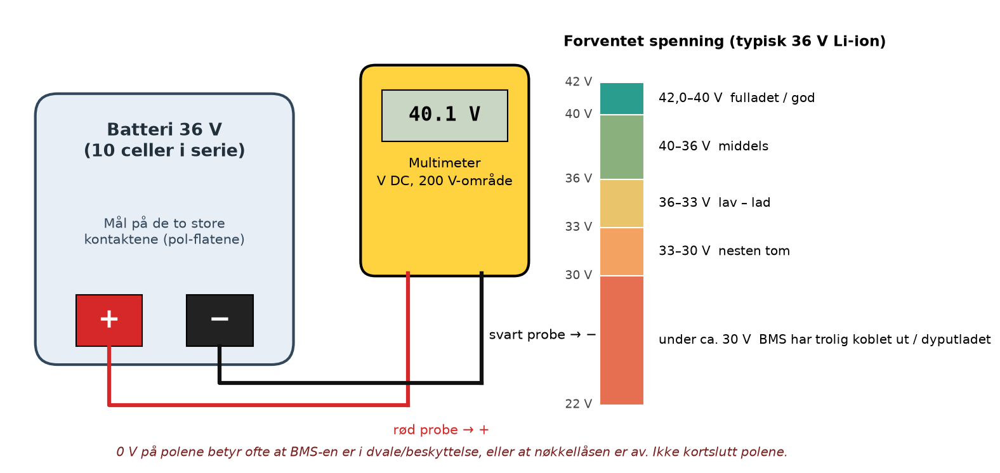
| Måling | Forventet | Hvis ikke |
|---|---|---|
| Batteri, fulladet | 41–42 V | Under 40 V rett etter lading: lader eller batteri |
| Batteri, i bruk | 33–40 V | Under ca. 33 V: lad |
| Batteri, 0 V på polene | BMS i dvale eller nøkkel av | Sett på lader 30 min. Fortsatt 0 V: verksted |
| Batteri under ca. 30 V | Dyputladet | Ikke tving lading. Lever til batterispesialist |
| Laderens utgang | Ca. 42 V uten last | Noen smarte ladere viser 0 V før de ser et batteri |
| Momentsensor i ro | 0,6–2 V på BH sitt testverktøy; arbeidsområde 0,1–3,5 V | Utenfor: kalibrer eller bytt sensor (verksted). BH 2015 / 2012 |
Spenningene for batteriet gjelder et vanlig 36 V Li-ion-batteri med 10 celler i serie (4,2 V per celle fullt). Nøyaktige BMS-grenser for BH-batteriet er ikke publisert, så de nederste batteritallene er estimater. TMM-tallene er derimot BH sine egne.
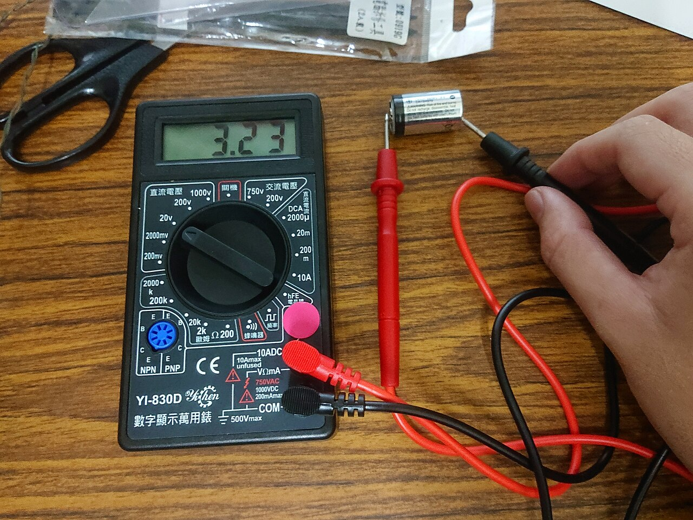
Sensorspenning 0,62 V
Eierens måling Eieren har målt 0,62 V i ro på én sensor, og mistenker at det er sensoren som har med «spinnen» / tråkket å gjøre.
Hypotese, ikke bekreftet Det er ikke fastslått hvilken kontakt som ble målt, eller mellom hvilke pinner. Nedenfor er typiske hvileverdier for de aktuelle sensortypene, slik at målingen kan sammenlignes. 0,62 V i ro passer dårlig med en ren av/på-sensor, og bedre med et analogt hvilenivå. Det er likevel ikke bevis for at det er TMM-sensoren.
| Sensortype | Typisk i ro | Passer 0,62 V? | Slik skiller du dem |
|---|---|---|---|
| BH TMM / momentsensor | BH oppgir 0,6–2 V på testverktøyet i ro, og 0,1–3,5 V som normalt arbeidsområde | 0,62 V ligger helt i nedre kant av BH sitt hvileområde. Det er forenlig, men beviser det ikke | Hold hjulet i ro og press pedalen bakover eller framover uten å spinne rundt. Et momentsignal skal typisk endre seg med kraft, ikke bare med rotasjon. BH 2012 og 2015 |
| Hall-gass (håndtak) | Typisk rundt 0,8–0,9 V i ro, og stiger mot ca. 3,5–4,2 V ved fullt pådrag | 0,62 V er lavere enn det vanlige hvilenivået. Det utelukker ikke en gass, men er ikke typisk | Vri eller skyv gassen (hvis sykkelen har en) og se om spenningen stiger jevnt. Grin Grinfineon-manual: 0,9–3,6 V. Vanlige hall-gasser beskrives ofte med ca. 0,8 V i ro |
| PAS / tråkkfrekvens (magnetskive) | Vanligvis et digitalt signal som hopper mellom ca. 0 V og ca. 5 V mens du tråkker rundt | Et jevnt 0,62 V i ro er typisk ikke slik en enkel PAS oppfører seg | Drei pedalen sakte en hel runde. En PAS skal gi pulser, ikke en jevn analog spenning. Evo Cross har ifølge BH momentsensor, ikke denne typen som standard |
| Hall-sensorer i motoren | Hvert signals leder er typisk enten nær 0 V eller nær 5 V. De bytter når hjulet dreies sakte | 0,62 V er ikke et typisk digitalt hall-nivå | Drei bakhjulet sakte og se om verdien hopper mellom lav og høy. Tre hall-signaler skal veksle, ikke stå i 0,62 V |
Praktisk test, med batteriet sikret og uten at hjulet kan kjøre av gårde: mål den samme ledningen i ro, mens du bare presser på pedalen, mens du dreier pedalen sakte, og mens du dreier bakhjulet sakte. Hvilken bevegelse som endrer tallet, sier mer enn hvilenivået alene.
Motorkontrolleren er varm
Eieren merker at motorkontrolleren blir ganske varm. Kontrolleren sitter inne i skrårøret, der varmen slipper dårlig ut, så en viss varme etter kjøring kan være vanlig. Det er ikke det samme som at den er for varm.
BH «Ebike diagnosis flows», 2015: Feil 11 og 12 handler om overoppheting. I feilkode-tabellen står feil 11 som «motor over-heat alarm» over 100 °C (strømmen trappes ned) og feil 12 som «motor over-heat protection» over 120 °C (kontrolleren stopper). Selve feilsøkingsflyten for 11/12 har derimot tittelen «controller over-heat protection» og sier: avkjøl kontrolleren til under 35 °C, og kontakt leverandør hvis feilen blir værende. Dokumentet er altså ikke helt entydig på om føleren sitter i motoren eller i kontrolleren. Begge kan bli varme.
- Normal: Lunken eller varm etter en bakke, uten lukt, uten feilkode, og den avkjøles i ro.
- Unormal: Svært varm etter kort tur, feil 11/12, brent lukt, ujevn gange, eller at rammen ved skrårøret blir for varm å holde i.
- Mulige årsaker, som sjekk — ikke som diagnose: hengende brems som gjør at motoren jobber mot motstand, dårlig motorkontakt, hall-feil som gir høyt strømtrekk (feil 05), kort eller skadet fase, eller skadet effekttrinn i kontrolleren (ofte feil 01, 02 eller 10). Feil kabling etter inngrep kan gi det samme.
- Måling: Et IR-termometer på røret over kontrolleren gir en pekepinn, men viser overflatetemperatur, ikke nødvendigvis den indre. BH sin flyt bruker 35 °C som mål etter avkjøling. Et tangamperemeter på plussledningen kan vise om strømmen er unormalt høy i ro eller under lett tråkk; typiske tall for akkurat denne kontrolleren er ikke publisert, så sammenlign med at den skal trekke lite i ro.
- Når bytte: Hvis feil 11/12 kommer tilbake etter at kontrolleren er avkjølt under 35 °C, peker BH sin flyt mot leverandør/bytte. En kontroller som lukter brent, eller som gir overstrømsfeil etter at kabler er sjekket, bør ikke brukes videre.
Justere bakgiret
BH ev705-spesifikasjonen oppgir Shimano Alivio 8-gir bakgir og Shimano Acera girhendlere. Eksakt modellnummer står ikke der, så sjekk merkingen på giret ditt. Bildene under er av et Shimano Deore, som er bygd på samme måte: de samme skruene sitter på Alivio og Acera, selv om formen er litt annerledes.

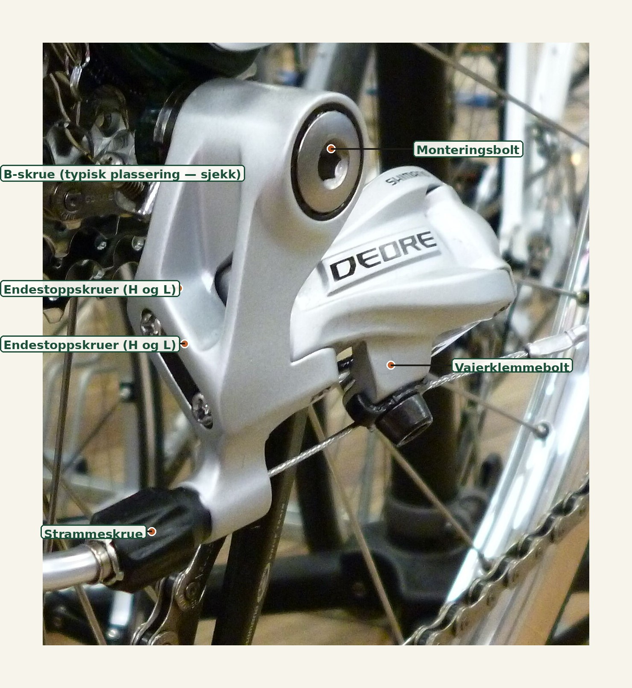
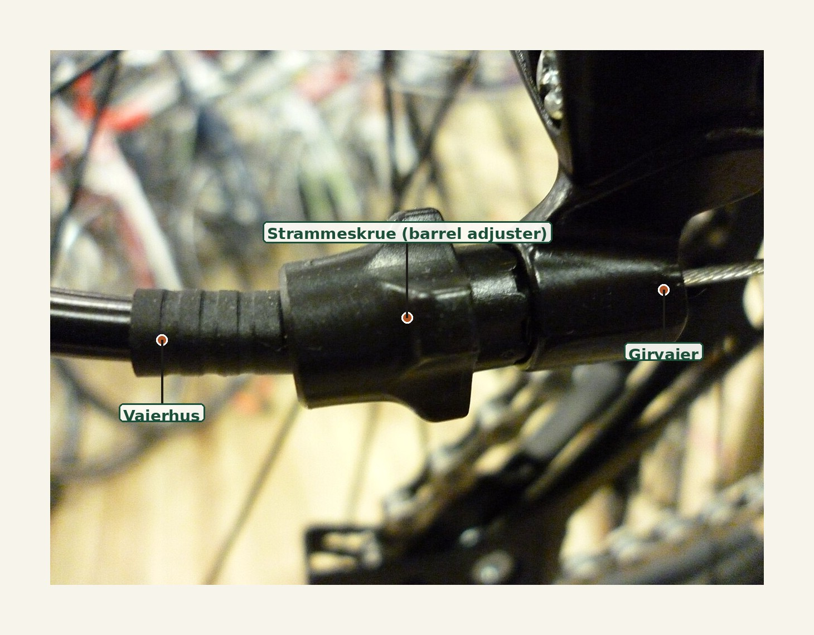
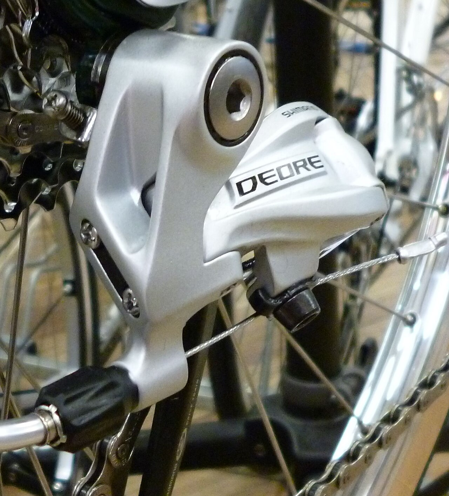
-
Sjekk girøret (hangeren)
Se bakfra. Girøret og bakgiret skal henge rett ned, parallelt med drevene. Bøyd girøre gir dårlig gir uansett justering. Bytt det eller få det rettet på verksted. Se også bildene av girøret.
-
Sett giret på minste drev
Gir ned til minste drev (tyngste gir). Skru strammeskruen helt inn, og så ut én omdreining.
-
Juster H-skruen
Øvre trinse skal stå rett under minste drev. Skru H-skruen inn for å flytte giret innover, ut for å flytte det utover. Er skruene umerket: skru på én av dem mens kjedet står på minste drev, og se hvilken som flytter giret. Det er H-skruen.
-
Stram vaieren
Løsne vaierklemmebolten. Trekk vaieren stramt med hånden. Trekk til bolten. Shimano oppgir typisk 6–7 N·m for vaierklemmebolten på mange av sine bakgir; sjekk hva som passer på ditt (ofte 4 mm unbrako, noen eldre 5 mm). Se verktøytabellen under videoavsnittet.
-
Juster L-skruen
Gå til største drev. Øvre trinse skal stå rett under største drev, og giret skal ikke kunne gå inn i eikene. Skru L-skruen inn hvis det går for langt.
-
B-skruen
På største drev: avstanden mellom øvre trinse og drevtennene skal være ca. 5–6 mm ifølge Shimanos MTB-bakgirmanual. Skru B-skruen inn for mer avstand. Sjekk manualen for ditt gir.
-
Indeksering
Gir ett klikk opp fra minste drev. Går ikke kjedet over: skru strammeskruen ut en kvart omdreining. Hopper det to drev: skru inn. Ulyder: finjuster i kvarte omdreininger.
-
Test
Gå gjennom alle gir, opp og ned, først i stativ, så under last med motoren av. Prøv så med assistanse.
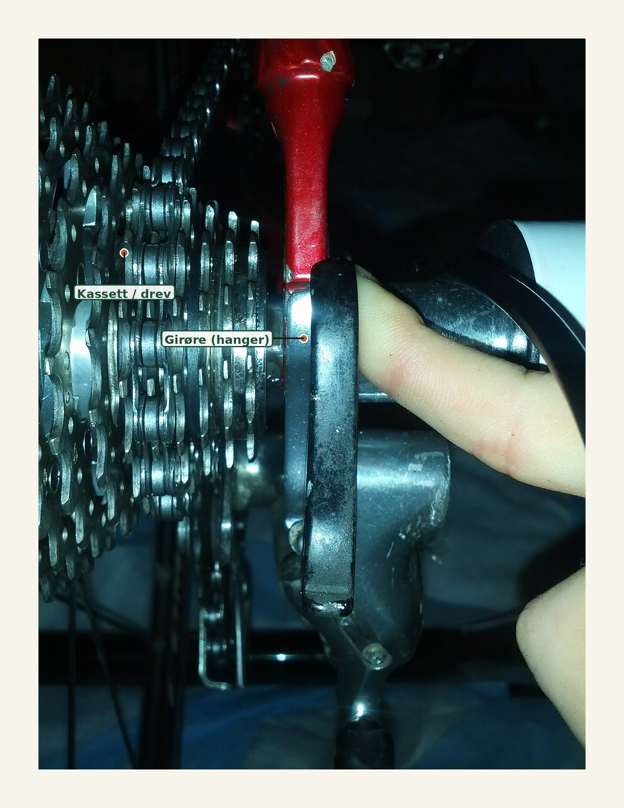
Hva betyr «armskjell»?
Ordet ble sagt muntlig og er uklart. Det er ikke et vanlig reservedelsnavn. De to mest nærliggende tolkningene er krankarm (armen pedalen sitter på) og girøre / hanger (beslagget bakgiret er skrudd i). En tredje mulighet er krankskall (huset i rammen der krankakslingen går gjennom), fordi «skjell» og «skall» høres like ut. Dette er en tolkning, ikke en bekreftelse av hva som ble ment. Her er bilder av krankarm og girøre, merket, så du kan peke på den delen du mener.
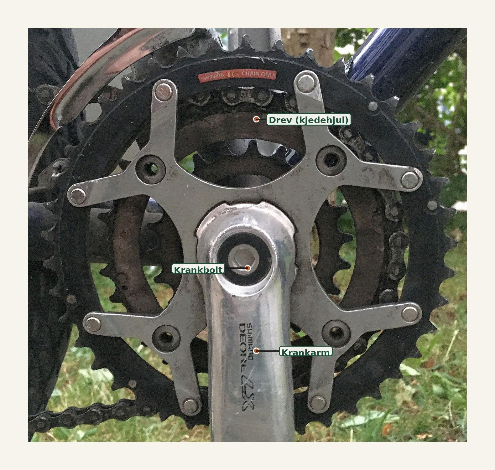
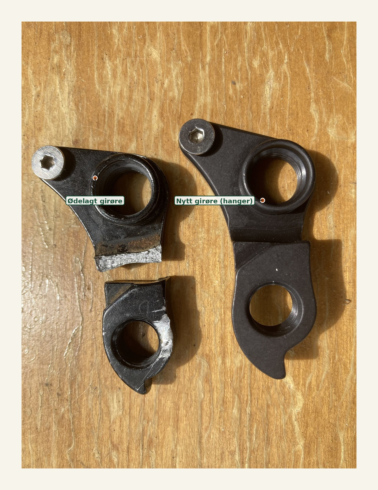
Video: stramme giret og bytte gir
Dette avsnittet er for deg som er helt i starten. Videoene er AI-genererte illustrasjoner, ikke opptak av en Evo Cross. De viser prinsippet. Det er den skrevne fremgangsmåten og verktøytabellen som gjelder.
1. Stramme giret (strammeskruen og vaieren)
-
Sett sykkelen stødig
Ta ut batteriet hvis du skal løsne vaierklemmen eller ta av hjulet. For bare å vri på strammeskruen holder det at sykkelen står stødig og at bakhjulet kan spinne.
-
Finn strammeskruen
Det er den rillede svarte plastmutteren der vaierhuset går inn i bakgiret. Den skrus med fingrene. Ingen nøkkel.
-
Små bevegelser
Gir ett klikk opp fra minste drev mens du tråkker sakte rundt (hjulet i stativ eller med bakhjulet fritt). Hopper ikke kjedet over på neste drev: skru strammeskruen ut (mot klokken, løsere hus / strammere vaier) en kvart omdreining og prøv igjen. Hopper det for langt: skru inn.
-
Hvis vaieren er helt slakk
Da holder det ikke med strammeskruen. Sett giret på minste drev, løsne vaierklemmebolten (se tabellen), trekk vaieren stramt med hånden, trekk til bolten med riktig moment, og finjuster deretter med strammeskruen. Dette er det samme som steg 4 under Justere bakgiret.
2. Bytte gir på styret mens du tråkker
-
Høyre hendel er bakgiret
På en vanlig Shimano-oppsetning med flatt styre styrer høyre girhendel bakgiret (kassetten), venstre styrer eventuelle drev foran. BH oppgir Acera-hendler og 8 gir bak. Sjekk at det stemmer på din sykkel.
-
Tråkk jevnt mens du girer
Kjedet må bevege seg for at giret skal skifte. Tråkk lett og jevnt, og gi ett klikk om gangen. Ikke tråkk hardt i et girskift, og ikke gi i det du står stille.
-
Ett klikk, så vent
Tommelen skyver typisk kjedet innover mot større drev (lettere gir). Den andre spaken (pekeliggeren) slipper vaieren og sender kjedet ut til mindre drev (tyngre gir). Vent til skiftet er ferdig før neste klikk. Hvis det skurrer, se indekseringen under Justere bakgiret.
-
Ikke tving det
Går det ikke over, er det justering eller et bøyd girøre som skal til, ikke mer kraft på hendelen.
Verktøy du trenger
Størrelsene under er hentet fra Shimanos bakgirmanual og momenttabell, og fra BH sin ev705-spesifikasjon (Alivio 8-gir, Acera-hendler). Eksakt modellnummer på giret ditt er ikke oppgitt av BH, så der det kan variere, står det «vanligvis». Prøv aldri en nøkkel som ikke passer.
| Del / steg | Verktøy | Moment | Kilde og merknad |
|---|---|---|---|
| Endestoppskruer H og L | Stjerneskrutrekker nr. 2 (Phillips #2) | Bare justering | Shimano DM-RD0001: «Top/Low adjustment screw: Screwdriver[#2]». Sjekk om skruene på ditt gir er kryss eller unbrako. |
| B-skrue (end adjust) | Vanligvis stjerneskrutrekker nr. 2 | Justering. Avstand typisk 5–6 mm mellom øvre trinse og største drev | Shimano DM-RD0001. Noen modeller har unbrako i stedet. Sjekk. |
| Vaierklemmebolt | Vanligvis 4 mm unbrako på nyere Shimano; eldre 8-gir kan ha 5 mm | 6–7 N·m i Shimanos momenttabell for mange MTB-bakgir | Shimano DM-TORQUE. Tabellen lister nyere modeller. Sjekk hva som passer i bolten på ditt Alivio 8-gir. |
| Monteringsbolt, bakgir mot girøre | 5 mm unbrako | 8–10 N·m | Shimano DM-RD0001 og DM-TORQUE |
| Bolt som fester girøret til rammen | Varierer med rammen (ofte unbrako eller Torx) | Ikke oppgitt for denne rammen | Ikke en Shimano-standard. Sjekk bolten på sykkelen. |
| Klembolt på girhendelen | Vanligvis 5 mm unbrako på Shimano styregir | Se dealer-manualen for din Acera-hendel | BH oppgir bare «Shimano Acera», uten modellnummer. Ikke stram på evne. |
| Strammeskrue | Fingrene, ingen nøkkel | — | |
| Baknav / bakhjul | Electric Bike Review (2015) beskriver Evo Cross med hurtigkobling (QR) og egen motorkontakt. Hvis din sykkel har muttere: mål dem. | — | Mange navmotorer har 18 mm flatter på akselen, men det er ikke bekreftet for denne modellen. Koble fra motorkabelen før hjulet tas ut. |
Del 2: Kan et annet display styre motoren?
| System | Protokoll | Kontakt | Med BH? |
|---|---|---|---|
| BH Emotion / Easy Motion (Neo/Evo) | Seriell, BH-egen, sjekksum | Fjærpinner i holder + BH-kabel | Original |
| KT (KT-LCD3/4/8) | KT seriell (UART) | Julet/Higo 5-pin | Nei |
| Bafang DP-serie | UART eller CAN, etter modell | Higo 5-pin | Nei |
| S866 / Lishui m.fl. | Egne UART-varianter | SM / Julet | Nei |
| «Easy Ride» | Ukjent. Ett merke med navnet bruker Bafang CAN | Ukjent | Nesten sikkert nei |
| «Spark» / Sparke | Ukjent. Sparke er norsk elsparkesykkel, 60 V | Ukjent | Nei, feil spenning |
- Fakta: BH-displayet kommuniserer serielt med kontrolleren. Et åpent verktøy (pye-motion, GitHub, 2017) leser disse meldingene og regner sjekksum.
- Fakta: BH-kontrolleren håndterer også TMM4-momentsensoren. Et fremmed display kan ikke erstatte det.
- Eneste display som passer uten ombygging: BH sitt eget. Forhandlere oppgir Neo-konsoll SKU 3861076000 (kilde fra 2016) og V4 sidedisplay 386128300 (oppgitt å passe EVO og NEO). Se plan B.
Det originale Neo-displayet (kretskortet)
Eierens observasjon (foto 18.11.2026) Displaykortet fra sykkelen er merket «NEO-DISPLAY V2 2014/10/25 V2.1». Det har seks merkede loddepunkter for kabelen: POWER, BRK, RX, TX, KEY og GND. Nederst sitter en mikrokontroller i QFP-hus (firkantet brikke med ben på alle sider), og det er et lite 4-pinners hode. Langs loddepunktene i kanten er det synlige loddrester og mulig korrosjon.
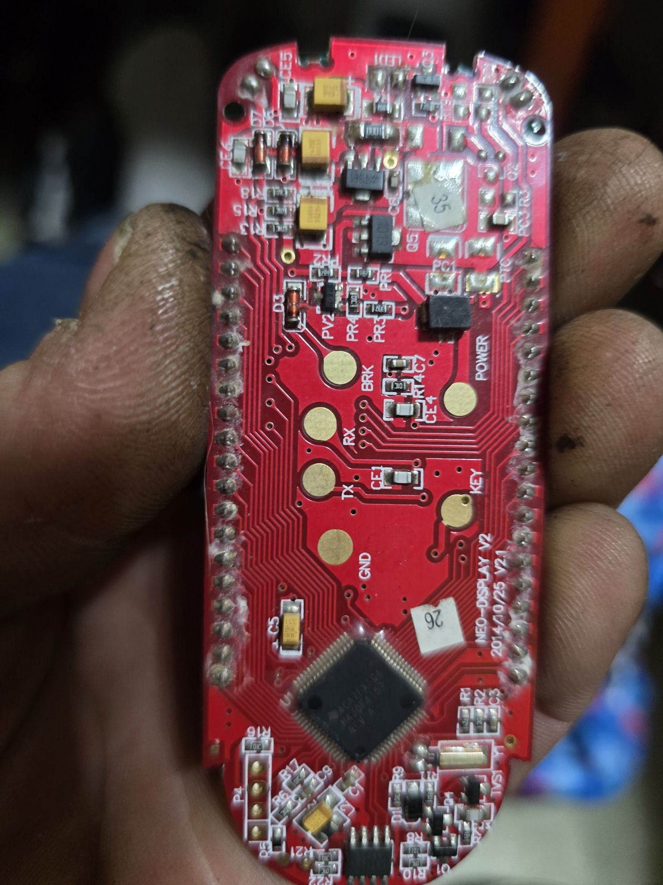
| Loddepunkt | Sannsynlig funksjon | Status |
|---|---|---|
| POWER | Strøm inn til displayet, trolig batterispenning fra kontrolleren | Tolkning mål det (plan A, rad 3) |
| GND | Jord, felles minus | Tolkning svært sannsynlig ut fra navnet |
| RX | Displayet tar imot data fra kontrolleren (fart, batteri, feilkoder) | Tolkning RX/TX kan være navngitt fra displayets eller kontrollerens side |
| TX | Displayet sender data til kontrolleren (hjelpenivå, knapper) | Tolkning |
| KEY | Vekke- eller startsignal til kontrolleren når du holder på-knappen | Tolkning mål det (plan A, rad 5) |
| BRK | Bremsesignal (displayet viser bremseikon, kontrolleren kutter assistansen) | Tolkning BH sitt testverktøy viser bremseikon på displayet når bremsen aktiveres BH 2015 |
| 4-pinners hode | Trolig for programmering eller feilsøking av mikrokontrolleren | Uverifisert ikke koble noe til det |
Hva som er funnet om Neo-displayet
- Kjent BH sin feilsøkingsguide (2015) gjelder både NEO og EVO, og nevner en 5-pinners kontakt mellom display og kontroller. Ved feil 13 (kommunikasjon) er rekkefølgen: bytt display, så displayholder, så kontroller, så kabler. BH har egne testverktøy for display, holder og kontroller, som bare forhandlere har.
- Kjent fra åpen kilde Verktøyet pye-motion (GitHub, 2017) leser meldingene mellom display og kontroller på BH EVO. Innstillingene i verktøyet er 9600 baud, 8 databiter, ingen paritet, 1 stoppbit, og byggeanvisningen bruker en USB-seriell-adapter satt til 3,3 V logikknivå. Det støtter at linken er en vanlig seriell UART med BH-egne meldinger og sjekksum. Det er skrevet for EVO, ikke spesifikt for Neo-displayet V2.
- Ikke funnet Ingen offentlig pinnefordeling, spenningsnivå på POWER eller beskrivelse av KEY/BRK for kortet «NEO-DISPLAY V2» er funnet. Generelle artikler om 5-pinners displaykontakter beskriver samme type ledere (strøm, jord, TX, RX, KEY), men de gjelder ikke BH spesielt.
- Forhandlere Erstatning: Neo-konsoll med SKU 3861076000 (forhandlerlenke sitert i 2016), BH-display for Neo/EVO/Nitro/EasyGo med rund kontakt (biciclick.es), og V4 sidedisplay 386128300 som forhandleren oppgir passer EVO og NEO (servicecourse.us). Se plan B.
Konsekvens Kortet bekrefter at det originale displayet snakker digitalt med kontrolleren. Et display fra et annet merke vil derfor ikke virke med BH-kontrolleren, selv om flere ledere har samme navn.
LED-panelet eieren har i reserve
Eierens observasjon (foto 18.11.2026) Et enkelt LED-panel uten tallskjerm: fire batteri-LED øverst, fire lamper for lys, LOW, MED og HIGH, en lysknapp, en rød av/på-knapp og en MODE-knapp. Kabelen ender i en rund, vanntett hannplugg i Julet/Higo-stil.
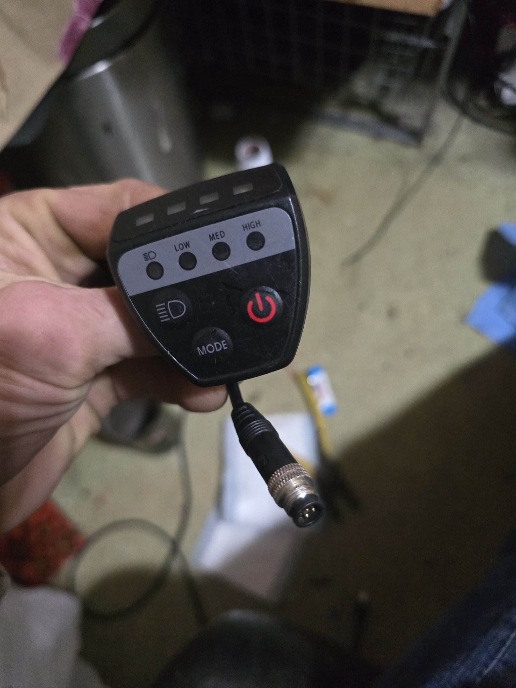
- Mest sannsynlig modell, ikke bekreftet KT-LED880 fra Suzhou Kunteng, eller en kopi. Det har samme oppsett: fire batteri-LED, LOW/MED/HIGH, lys, av/på og MODE, 5-leders digital kommunikasjon og 36/48 V. Etiketten på baksiden og antall pinner i pluggen er ikke sjekket ennå.
- Kjent KT-LED880 virker bare med KT-kontrollere Kunteng, Emotoer. Det skal ikke kobles til BH-kontrolleren.
- Kjent Panelet sender ikke et 1–4 V gassignal. MODE bytter LOW/MED/HIGH digitalt. Fart med gass kommer fra et eget 3-pinners gasshåndtak (+5 V, jord, signal), typisk ca. 0,8–0,9 V i ro til ca. 3,6–4,2 V ved fullt pådrag.
| Leder (typisk farge) | KT-LCD3-manualen / forum | WattWorks (KT LCD3/LED890) | Status |
|---|---|---|---|
| Rød | Batteri+ (pakkespenning, ikke 5 V) | Batteri+ | Typisk, men mål |
| Svart | Jord | Jord | Typisk, men mål |
| Blå | Elektrisk lås (koblet B+ som starter kontrolleren) | UART TX | Uverifisert kildene er uenige |
| Grønn | UART TX | UART RX | Uverifisert |
| Gul | UART RX | Lys | Uverifisert |
Ikke stol på fargene. Sjekk etiketten, mål gjennomgang mot kjente punkter, eller bruk manualen som følger med kontrolleren. Koblingsskjemaet står under plan C.
Koblingsskjema for ny kontroller
Idéen er enkel: den originale BH-kontrolleren og BH-displayet hører sammen og snakker et lukket språk. Hvis den kontrolleren er død og ikke kan skaffes, bytter du ikke bare displayet. Du bytter hele styringen til et sett der kontroller, display, bremsehendler og PAS er laget for hverandre. Motoren er en vanlig børsteløs motor med hall-sensorer. Den bryr seg ikke om merket på kontrolleren, så lenge spenning, faser og hall-rekkefølge er riktig. Momentsensoren TMM4 vil du typisk miste; den erstattes av en enklere PAS-sensor ved kranken.

Hva de viktigste ledningene gjør: de to tykke fra batteriet er pluss og minus. De tre tykke til motoren er fasene, som skaper det roterende feltet. De tynne hall-lederne forteller kontrolleren hvor rotoren står. Displaykabelen bærer strøm og den serielle dialogen. Bremsekablene er en enkel bryter som ber kontrolleren kutte kraft. PAS-kabelen forteller at du tråkker.
| Del | Krav | Merknad |
|---|---|---|
| Kontroller | 36 V, 15–17 A, sinus, hall-sensorert | Gjerne med selvlæring av fase/hall-rekkefølge |
| Display | Samme merke som kontrolleren | F.eks. KT-LCD3 til KT. Kjøp i sett |
| PAS-sensor | Tråkkfrekvens, 12 magneter | Erstatter TMM4. Monteres ved krankboks |
| Bremsehendler | Med bryter (2 ledere) | Samme kontakttype som kontrolleren |
| Sikring | 20 A, i pluss-ledningen | Nær batteriet |
| Kabler | 1,5–2,5 mm² for batteri og faser | Bruk riktige plugger, ikke tvinn sammen |
| Gass (valgfritt) | Hall-gass | Bare opptil 6 km/t lovlig på vei |
Rekkefølge på arbeidet:
-
Dokumenter alt
Ta bilder av alle kontakter og ledninger før du kobler fra. Merk hver ledning med tape.
-
Finn fasene
Motorkabelen har tre tykke ledere. Mål motstand mellom hvert par med batteriet ute: alle tre par skal vise like lav verdi.
-
Finn hall-lederne
Fem tynne ledere: +5 V, GND og tre signaler. Med 5 V tilført skal hvert signal veksle mellom ca. 0 og 5 V når du dreier hjulet sakte.
-
Lag overgang, ikke kapp originalen
Lag en adapterkabel mellom BH-pluggen og den nye kontrolleren. Da kan du gå tilbake. BH-pluggens pinneplan er ikke publisert, så du må identifisere lederne med måling, ikke etter fargegjetting.
-
Koble alt, sikring sist
Følg skjemaet som følger kontrolleren. Fargene varierer mellom produsenter.
-
Første test
Hjulet fritt i stativ. Lav assistanse. Bruk selvlæring hvis kontrolleren har det. Ellers prøv fase/hall-kombinasjoner til motoren går jevnt og stille og trekker lite strøm.
-
Still inn grensene
Sett fartsgrense 25 km/t og hjulstørrelse riktig i displayets innstillinger.
Fordeler
- Deler er lett å få tak i
- Billigere enn BH-originaldeler
- Mange innstillinger i displayet
Ulemper
- Du mister momentsensoren og får tråkkfrekvens-PAS
- Kontrolleren må monteres utenpå rammen
- Garantien bortfaller
- Feil kobling kan ødelegge motor og kontroller
Idéen om spenningsregulator
Idéen var å lage en fartskontroll med en spenningsregulator som justerer strømmen inn i de tre fasene. Det vil ikke virke.

- En børsteløs motor har ingen børster som bytter strøm. Kontrolleren må gjøre det, mange hundre ganger i sekundet.
- Hall-sensorene forteller hvor rotoren står. Kontrolleren slår på riktig fasepar i riktig retning, og bytter når rotoren har flyttet seg.
- Seks transistorer (MOSFET-er) i tre halvbroer gjør byttet. Gass eller PAS styrer hvor lenge de er på (PWM), og det gir mer eller mindre kraft.
- En spenningsregulator gir bare én fast likespenning. Fasene får ikke noe roterende felt. Motoren står stille, låser seg og blir varm.
- Strømmen er 15–20 A. Det er høy effekt med fare for brann. Selv erfarne bygger sjelden dette selv.
| Hall A-B-C | Fase + | Fase − |
|---|---|---|
| 1-0-1 | U | V |
| 1-0-0 | U | W |
| 1-1-0 | V | W |
| 0-1-0 | V | U |
| 0-1-1 | W | U |
| 0-0-1 | W | V |
Tabellen viser prinsippet for seks-trinns styring. Den nøyaktige rekkefølgen avhenger av motoren. En ferdig kontroller tar seg av dette.
Lovverk i Norge
Statens vegvesen (lest 18.11.2026): En elsykkel må ha maks 0,25 kW nominell motoreffekt, gi kraft bare når du tråkker, og koble ut ved 25 km/t. Ren motordrift er lov opp til 6 km/t. Ellers er den en moped, med krav om førerkort, registrering og forsikring. En ombygget sykkel som går over disse grensene kan bare brukes utenfor offentlig vei.
Kilder
Bilder: Wikimedia Commons, lisenser oppgitt under hvert bilde. Bilder merket «Foto: eieren» er eierens egne. Diagrammene er laget for denne siden. Videoene er AI-genererte illustrasjoner.